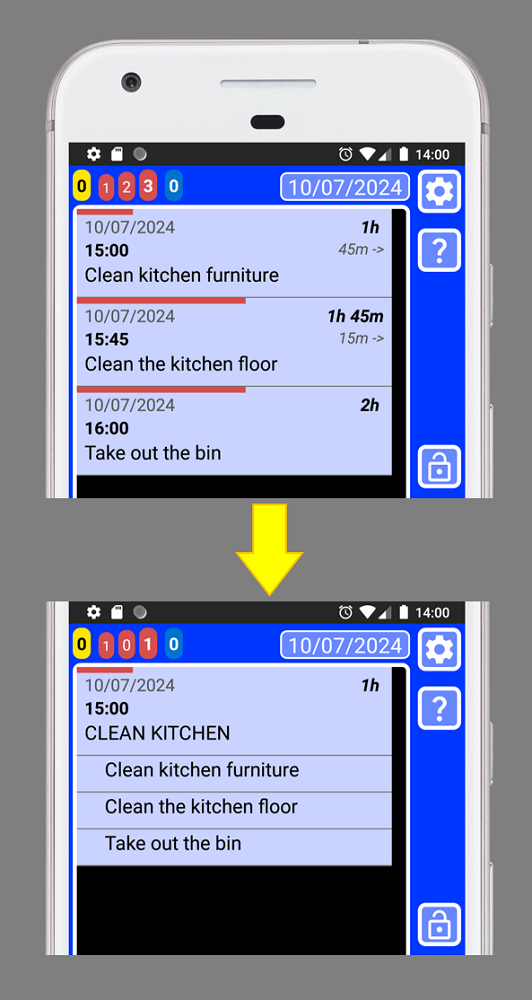
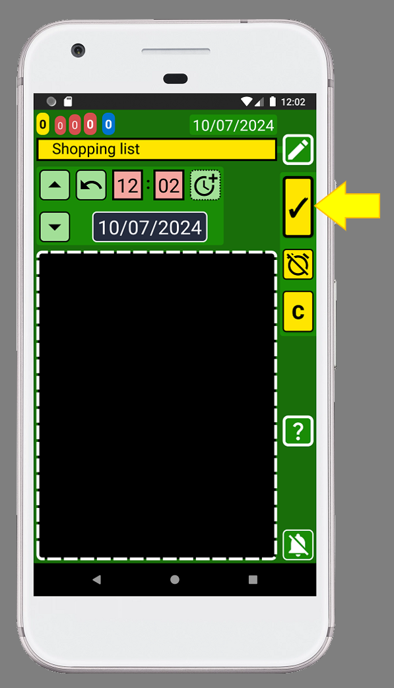
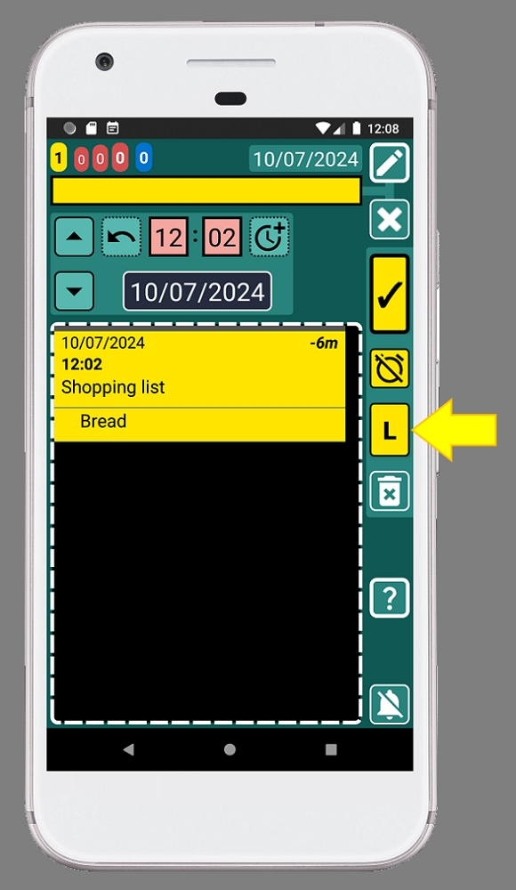
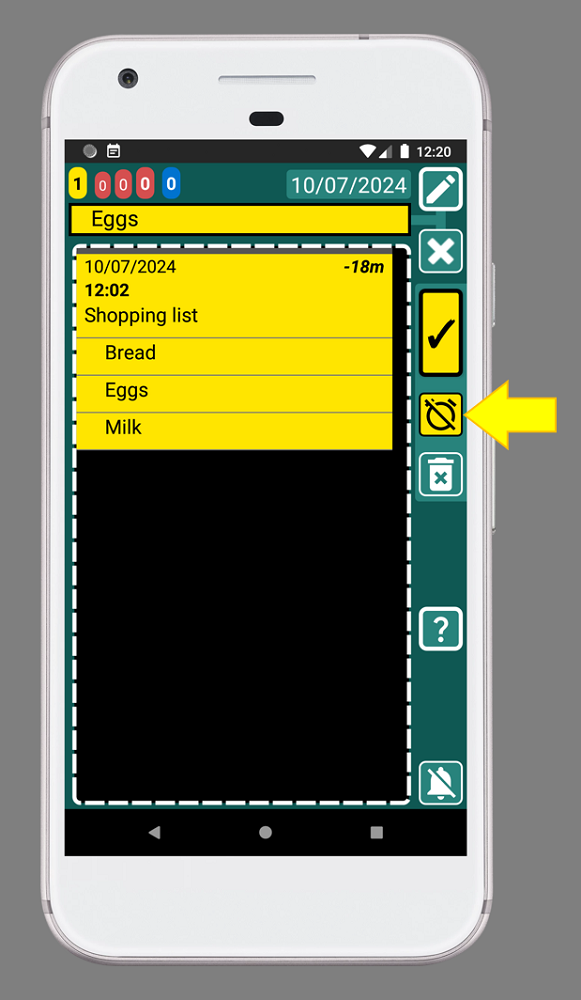

Practice what the manual shows you several times and erase it. After doing it one or several times you will be able to apply what you have learned to your life, because everyone's life is different.
SECURElogBook also allows you to create lists. Once a list is created you will be able to move and copy it.
The more you customize the Favourites menu to your needs, the easier and faster it will be to add everything.
Once you complete the list, you don't need to delete it. On the contrary, the more data the application has, the more it will help you. If you use the application to make your shopping lists, the search system will allow you to know things like:
. How often do you shopping?
. How often do you buy vegetables?
. If you add the name of the store, you can even find out where you bought that cake you liked so much!
When you finish shopping, you can add the total price to the header of the list. Then if you do the same shopping list in different shops, you will be able to see the difference in price.
You can use lists to group records that are similar and must be completed at the same time. For example, if you have 3 records: 1) Clean kitchen furniture, 2) Clean kitchen floor, 3) Take the bin out. It will be easier to create a list called “CLEAN KITCHEN” and add them to the list:

Using lists you can move all the records at the same time as now they will be grouped by the list.
How to create a list
1. Open SECURElogBook and go to the main window, with blue background:

2. Create a new record by pressing the button indicated with the yellow arrow (image above).
3. Once the creator window is open (green background) we can edit the record:

4. You can name it whatever you want, but let’s call this list “Shopping list” by adding the text inside the text box indicated with the yellow arrow (image above):

5. After adding the text “Shopping list”, save the record by pressing the button indicated with the yellow arrow (image above).
6. Tap on the “Shopping list” record to edit it:

7. The editor window (teal background) will display the “Shopping list” record:

8. Clear the text box by pressing the button indicated with the yellow arrow:

9. Type or select from Favourites menu

10. After adding the text "Bread", press the button with the "L" (list), indicated with the yellow arrow. This will add the item "Bread" to the list:

Every time we add an item to the list the text box will be cleared.
Notice how the record "Bread" have been added below the "Shopping list" record (image above).
From now on, "Bread" will be linked to "Shopping List".
11. Let's add "Eggs" to the list. Type "Eggs" or select it from Favourites menu

12. Let's add "Milk" to the list. Type "Milk" or select it from Favourites menu

Note that the items in the list will be sorted alphabetically. If you want to change the order of the items, before you create the records, you can add in front of the text: 01., 02., 03., ... The numbers help you sort the list in the order you want.
13. Press the back button on your phone to go back to the main window:
Well done! You've created your first shopping list!
How to use the list
Once we have a list, items are attached to the first record, in this case "Shopping list". We can use that record to move the list in time or create a copy of the entire list.
Once you finish the list you can send it to the appropriate time by editing and changing the time of the first record of the list.
1. To complete a list item, you can tap it. Let's indicate that we have already put the eggs in the cart, that means the task is completed. To do this, tap "Eggs" to open the "Eggs" record:

2. To complete the record press the button with the yellow arrow (image above).
Now, the record buttons are black, to indicate that the record/task is completed:

3. To save the record and go back, press the button indicated with the yellow arrow (image above).
Now we can see that we have completed the record because the record is black:

4. Select another item in the list that is yellow and return to step 2 until there are no more yellow items left in the list. (as in the image below):
5. Now that everything is in the trolley, you can complete (turn it black) the "Shopping list" record:

Mission complete, the shopping is finished!
Thanks to SECURElogBook, you'll now be able to see how often you shop by searching for "Shopping List." If you add the store name after "Shopping List", when searching for an product within your data, the search will display the list with the store name. This will help you know where you buy your items.
You can also use the list to describe a process from work. When you create a list where you need to sort items in a specific way, be sure to create the items by adding a number in front to sort them (when you create them):
1. First step.
2. Second step.
…
Remember that lists are always ordered alphabetically.
How to remove an item from the list
To delete an item from the list, we must do it from the main window.
1. Open SECURElogBook and go to the main window, with blue background:
2. Let's remove the “Milk” record. To do it, just tap on "Milk" to edit it:

3. Then press the button indicated with the yellow arrow (image above):

After we confirm that we want to delete the item, the “Milk” record will be deleted.
In a list, all records are linked to the main record of that list. That is the reason why you can delete the entire list by deleting the main record. You can also move and copy the entire list by moving or copying the main record in the list.
SECURElogBook does the shopping process easier because it is always with you. You can create a shopping list with days in advance and add items as you remember them. Plus, you don't need to waste time guessing or thinking about what to buy. You can see what you normally buy thanks to the Favourites menu. When looking at your grocery list, it will help you to realise if you are missing something or not.
TURBO MODE: You can simply search for shopping lists from your data and choose one that has what you need. Then, you can create a copy, Ole! Shopping list creation world record broken! üòâ Remember, you can always add or remove items from the copied list.
Tip 1: Get in the habit of adding everything you normally buy to your Favourites menu. It is not that hard üòâ It will save you a lot of time in the long run! If you do it, in no time you will be able to do your shopping list like a professional!
Tip 2: You can always use more than one category from your Favourites menu to define everything you normally buy:
Tip 3: I usually create the shopping list as a yellow record. This way it will always be highlighted and easy to find. I start the process as soon as I notice that I need to buy something. Then, I create a shopping list and add the item to it. With the time I will remember that I need to buy more things, so I add them straight away. Finally, when I decide that I am going to do shopping, I take a quick look at my grocery list inside Favourites to make sure I haven't missed anything.